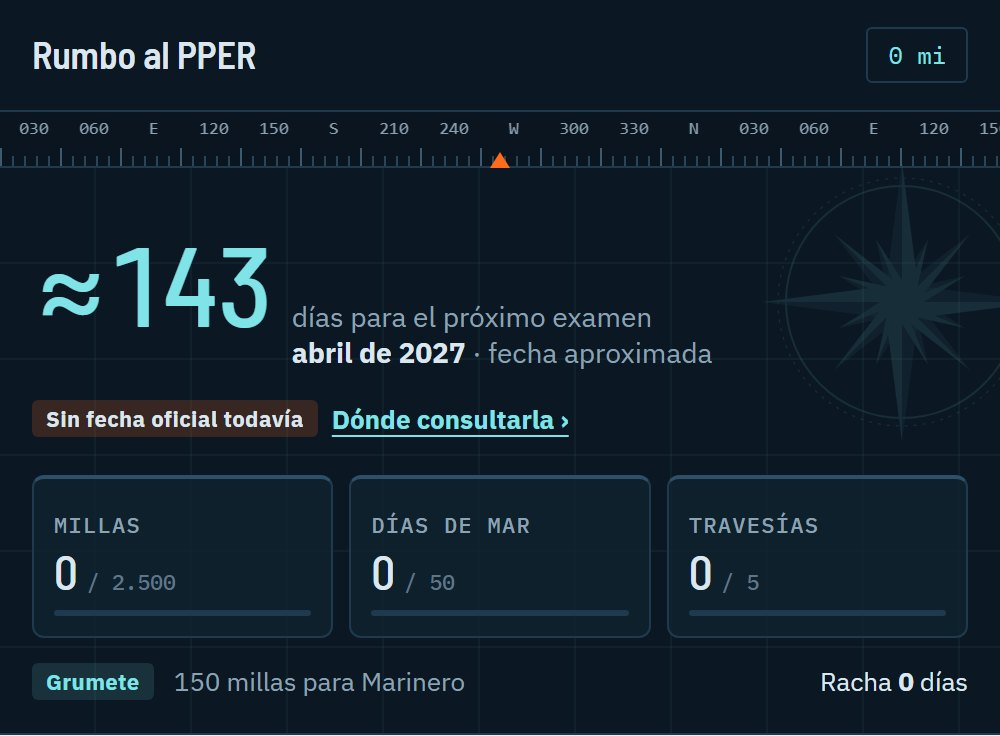

Titulaciones náuticas de recreo
Cada tema está redactado a partir del BOE en vigor, no de apuntes de hace años. Practicas con los exámenes que ha publicado el Ministerio y sabes qué se pregunta en cada número del test.

Exámenes
El PPER ya está completo. Las demás titulaciones de recreo se irán añadiendo con el mismo método.
Método
Cuatro secciones, cada una con una función. Puedes seguir el temario en orden o ir directo a lo que más cae.
Fichas, verdadero o falso contra el reloj, parejas, cifras clave y un examen al final de cada tema.
Desde 2019 cada número del test cae en la misma norma. Ahí ves cuál y qué preguntas se han repetido.
Las convocatorias completas, con 60 minutos de reloj y la plantilla oficial de respuestas.
Las preguntas que fallas vuelven hasta que las aciertas. La bitácora te dice cuánto llevas.
Las preguntas antiguas que se basan en normas derogadas llevan un aviso, para que no te aprendas una respuesta que ya no vale.
Por qué existe
Nos presentamos al PPER y los apuntes traían normas que ya estaban derogadas. Así que rehicimos el temario con el BOE en la mano y lo metimos en el móvil.
Estudiamos con esta app y aprobamos los tres. Ahora la compartimos y vamos con el resto de titulaciones.
Acceso
Escríbenos por Instagram y te damos acceso con tu correo. Después entras en la app, creas tu cuenta y tu progreso se guarda en ella.